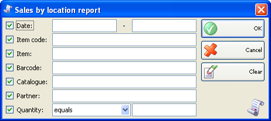
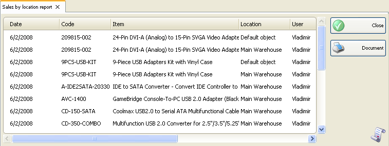

Raport vanzari dupa localizare
In prima fereastra a raportului se pot specifica criteriile de filtrare si campurile care se vor vizualiza.
Numai randurile bifate se vor vizualiza in raport.

Se pot allege filtrari pentru fiecare camp prin apasarea tastei� F4.
Se poate limita raportul la un singur criteriu de filtrare � de exemplu, vizualizare vanzari pentru un singur articol sau se pot aplica mai multe criterii de filtrare in acelasi timp � de exemplu, vizualizare vanzari de la un anumit client si o anumita perioada de timp.
Pentru stergerea filtrarilor specificate, click pe butonul Clear. In aceasta situatie raportul va afisa toate operatiile fara nici o restrictie.
Click pe butonul OK pentru a genera raportul dupa specificarea criteriilor de filtrare. Click pe butonul Cancel pentru inchiderea ferestrei.

Raportul vanzari dupa localizare contine informatii despre valoare vanzari pentru o anumita localizare. Se vor afisa nume localizare si valoare vanzare pentru i anumita perioada de timp, in functie de criteriile de filtrare.
�2006-2012 Microinvest, All rights reserved